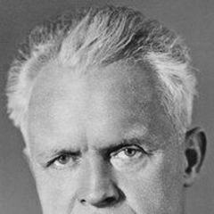
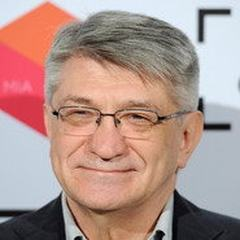
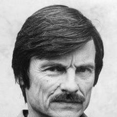
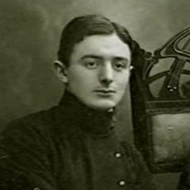
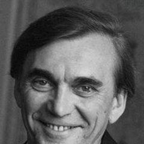
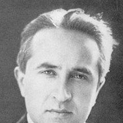
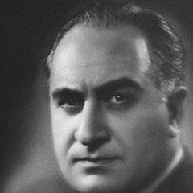
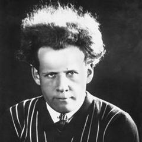
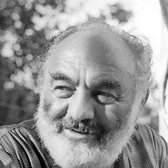
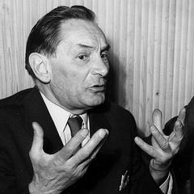

Rusya / SSCB
Sovyet sineması devrimle biçimlendi. 1920'lerde Eisenstein, Pudovkin, Vertov ve Kuleshov montaj kuramını geliştirdi ve kurguyu anlamın ana kaynağı saydı. Stalin'in sosyalist gerçekçilik talebi alanı daralttı; yine de Dovzhenko ve sonradan Kalatozov bu çerçevede şiirsel yollar buldu. 1950'lerin Çözülme'sinden sonra daha kişisel bir sinema döndü ve Gürcistan, Ermenistan gibi yerlerde ulusal film okulları gelişti. Sovyet sonrası Rus sineması devlet fonunun çöküşünden sonra kendini yeniden icat etmek zorunda kaldı. Sokurov, Mikhalkov ve Zvyagintsev en tanınmış işlerinden bazılarını yaptı; uzun, resimsel görüntülere, ahlaki alegoriye, dini ve politik temalara düşkündürler ve Tarkovsky benzeri bir mirastan beslenirler. Endüstri bugün değişen siyasi baskılar altında popüler gişe filmlerini küçük bir sanat sinemasıyla harmanlıyor.
Ünlü Yönetmenler
 Aleksei GermanSSCB / Rusya
Aleksei GermanSSCB / Rusya
Alexander DovzhenkoSSCB
Alexander SokurovRusyaAndrei KonchalovskySSCB / Rusya
Andrei TarkovskySSCB Andrey ZvyagintsevRusya
Andrey ZvyagintsevRusya
Dziga VertovSSCB
Elem KlimovSSCB Fridrikh ErmlerSSCBGleb PanfilovSSCB / Rusya
Fridrikh ErmlerSSCBGleb PanfilovSSCB / Rusya Kira MuratovaSSCB / UkraynaLarisa ShepitkoSSCB
Kira MuratovaSSCB / UkraynaLarisa ShepitkoSSCB
Lev KuleshovSSCB
Mikhail KalatozovSSCB Nikita MikhalkovRusya
Nikita MikhalkovRusya
Sergei EisensteinSSCB
Sergei ParajanovSSCB (Ermenistan / Gürcistan / Ukrayna)
Vsevolod PudovkinSSCBEn iyi filmler · 112 film
- Mother (1990) 1990 · Gleb Panfilov · IMDb 8,4
- Man with a Movie Camera 1929 · Dziga Vertov · IMDb 8,3
- The Cranes Are Flying 1957 · Mikhail Kalatozov · IMDb 8,3
- Come and See 1985 · Elem Klimov · IMDb 8,3
- I Am Cuba 1964 · Mikhail Kalatozov · IMDb 8,2
- The Ascent 1977 · Larisa Shepitko · IMDb 8,2
- Stalker 1979 · Andrei Tarkovsky · IMDb 8,0
- Ivan's Childhood 1962 · Andrei Tarkovsky · IMDb 8,0
- Andrei Rublev 1966 · Andrei Tarkovsky · IMDb 8,0
- Battleship Potemkin 1925 · Sergei Eisenstein · IMDb 7,9
- Solaris 1972 · Andrei Tarkovsky · IMDb 7,9
- Mirror 1975 · Andrei Tarkovsky · IMDb 7,9
- Nostalghia 1983 · Andrei Tarkovsky · IMDb 7,9
- Siberiade 1979 · Andrei Konchalovsky · IMDb 7,9
- The Return 2003 · Andrey Zvyagintsev · IMDb 7,9
- The Sacrifice 1986 · Andrei Tarkovsky · IMDb 7,8
- Shadows of Forgotten Ancestors 1965 · Sergei Parajanov · IMDb 7,8
- Welcome, or No Trespassing 1964 · Elem Klimov · IMDb 7,8
- Burnt by the Sun 1994 · Nikita Mikhalkov · IMDb 7,8
- Twenty Days Without War 1976 · Aleksei German · IMDb 7,7
- Strike 1925 · Sergei Eisenstein · IMDb 7,6
- Ivan the Terrible, Part I 1944 · Sergei Eisenstein · IMDb 7,6
- The Barber of Siberia 1998 · Nikita Mikhalkov · IMDb 7,6
- Leviathan 2014 · Andrey Zvyagintsev · IMDb 7,6
- Loveless 2017 · Andrey Zvyagintsev · IMDb 7,6
- Salt for Svanetia 1930 · Mikhail Kalatozov · IMDb 7,5
- Wings 1966 · Larisa Shepitko · IMDb 7,5
- The Color of Pomegranates 1969 · Sergei Parajanov · IMDb 7,5
- Farewell 1983 · Elem Klimov · IMDb 7,5
- The Tuner 2004 · Kira Muratova · IMDb 7,5
- Close to Eden 1991 · Nikita Mikhalkov · IMDb 7,5
- 12 2007 · Nikita Mikhalkov · IMDb 7,5
- Vassa 1983 · Gleb Panfilov · IMDb 7,5
- The First Teacher 1965 · Andrei Konchalovsky · IMDb 7,5
- The Banishment 2007 · Andrey Zvyagintsev · IMDb 7,5
- Alexander Nevsky 1938 · Sergei Eisenstein · IMDb 7,4
- Mother (1926) 1926 · Vsevolod Pudovkin · IMDb 7,4
- The Steamroller and the Violin 1961 · Andrei Tarkovsky · IMDb 7,4
- My Friend Ivan Lapshin 1984 · Aleksei German · IMDb 7,4
- The End of St. Petersburg 1927 · Vsevolod Pudovkin · IMDb 7,3
- Fragment of an Empire 1929 · Fridrikh Ermler · IMDb 7,3
- The Legend of Suram Fortress 1985 · Sergei Parajanov · IMDb 7,3
- The Sun 2005 · Alexander Sokurov · IMDb 7,3
- Slave of Love 1976 · Nikita Mikhalkov · IMDb 7,3
- Dark Eyes 1987 · Nikita Mikhalkov · IMDb 7,3
- Dear Comrades! 2020 · Andrei Konchalovsky · IMDb 7,3
- Elena 2011 · Andrey Zvyagintsev · IMDb 7,3
- Earth 1930 · Alexander Dovzhenko · IMDb 7,2
- Ashik Kerib 1988 · Sergei Parajanov · IMDb 7,2
- Russian Ark 2002 · Alexander Sokurov · IMDb 7,2
- Mother and Son 1997 · Alexander Sokurov · IMDb 7,2
- The Theme 1979 · Gleb Panfilov · IMDb 7,2
- Khrustalyov, My Car! 1998 · Aleksei German · IMDb 7,2
- Uncle Vanya 1970 · Andrei Konchalovsky · IMDb 7,2
- Runaway Train 1985 · Andrei Konchalovsky · IMDb 7,2
- The General Line 1929 · Sergei Eisenstein · IMDb 7,1
- Chess Fever 1925 · Vsevolod Pudovkin · IMDb 7,1
- Arsenal 1929 · Alexander Dovzhenko · IMDb 7,1
- A Sixth Part of the World 1926 · Dziga Vertov · IMDb 7,1
- Brief Encounters 1967 · Kira Muratova · IMDb 7,1
- House of Fools 2002 · Andrei Konchalovsky · IMDb 7,0
- The Postman's White Nights 2014 · Andrei Konchalovsky · IMDb 7,0
- Storm Over Asia 1928 · Vsevolod Pudovkin · IMDb 6,9
- Kino-Eye 1924 · Dziga Vertov · IMDb 6,9
- The Eleventh Year 1928 · Dziga Vertov · IMDb 6,9
- Sport, Sport, Sport 1970 · Elem Klimov · IMDb 6,9
- Suvorov 1941 · Vsevolod Pudovkin · IMDb 6,8
- Enthusiasm 1931 · Dziga Vertov · IMDb 6,8
- The Red Tent 1969 · Mikhail Kalatozov · IMDb 6,8
- Among Grey Stones 1983 · Kira Muratova · IMDb 6,8
- Alexandra 2007 · Alexander Sokurov · IMDb 6,8
- Deserter 1933 · Vsevolod Pudovkin · IMDb 6,7
- The Great Consoler 1933 · Lev Kuleshov · IMDb 6,7
- Moloch 1999 · Alexander Sokurov · IMDb 6,7
- Poem of the Sea 1958 · Alexander Dovzhenko · IMDb 6,6
- Ukrainian Rhapsody 1961 · Sergei Parajanov · IMDb 6,6
- Francofonia 2015 · Alexander Sokurov · IMDb 6,6
- Asthenic Syndrome 1989 · Kira Muratova · IMDb 6,5
- Father and Son 2003 · Alexander Sokurov · IMDb 6,5
- Faust (2011) 2011 · Alexander Sokurov · IMDb 6,5
- Hard to Be a God 2013 · Aleksei German · IMDb 6,5
- Ivan 1932 · Alexander Dovzhenko · IMDb 6,4
- The Extraordinary Adventures of Mr. West in the Land of the Bolsheviks 1924 · Lev Kuleshov · IMDb 6,4
- Andriesh 1954 · Sergei Parajanov · IMDb 6,3
- Shchors 1939 · Alexander Dovzhenko · IMDb 6,2
- Aerograd 1935 · Alexander Dovzhenko · IMDb 6,0
- The Turning Point 1945 · Fridrikh Ermler · IMDb 5,9
- Peasants 1935 · Fridrikh Ermler · IMDb 5,9
- Life in Bloom 1948 · Alexander Dovzhenko · IMDb 5,8
- Sunstroke 2014 · Nikita Mikhalkov · IMDb 5,8
- The Great Citizen 1938 · Fridrikh Ermler · IMDb 5,4
- The Death Ray 1925 · Lev Kuleshov
- Trial on the Road 1971 · Aleksei German
- Zvenyhora 1928 · Alexander Dovzhenko
- She Defends Her Country 1943 · Fridrikh Ermler
- I Wish to Speak 1976 · Gleb Panfilov
- Counterplan 1932 · Fridrikh Ermler
- The Debut 1970 · Gleb Panfilov
- An Unfinished Piece for Mechanical Piano 1977 · Nikita Mikhalkov
- Agony 1975 · Elem Klimov
- Valery Chkalov 1941 · Mikhail Kalatozov
- Days of the Eclipse 1988 · Alexander Sokurov
- A Simple Case 1932 · Vsevolod Pudovkin
- The Letter That Was Never Sent 1959 · Mikhail Kalatozov
- Kiev Frescoes 1966 · Sergei Parajanov
- The Lonely Voice of Man 1978 · Alexander Sokurov
- Dura Lex 1926 · Lev Kuleshov
- Oblomov 1980 · Nikita Mikhalkov
- Ivan the Terrible, Part II 1958 · Sergei Eisenstein
- October 1928 · Sergei Eisenstein
- The Story of Asya Klyachina 1967 · Andrei Konchalovsky
- Long Farewells 1971 · Kira Muratova